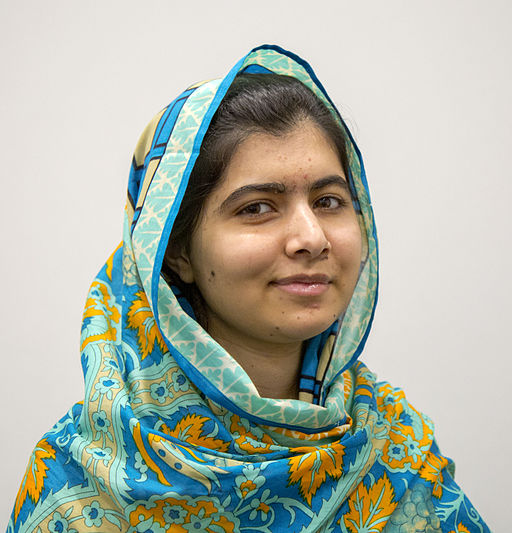

Malala Yousafzai
Malala Yousafzai est une militante pakistanaise qui combat pour revendiquer les des droits des femmes.
Chronologie de sa vie
- : Malala née à Mingora dans le nord du Pakistan.
- , elle livre un témoignage pour la BBC critiquant les talibans. Elle exprime son souhait de devenir médecin et dénonce le fait que les talibans incendient les écoles pour filles et assassinent leurs opposants. Elle sera alors reconnue comme héroïne.
- Suite à cela, les talibans l'attaquent quatre ans plus tard à la sortie de son école. Elle est gravement blessé et est transporté au Royaume-Uni pour être soignée.
- Après être soignée, elle retourne à l'école, poursuit son combat et raconte son histoire dans le monde entier afin que tous les enfants puissent aller à l'école.
- Le , elle parle de l'accès à l'éducation pour les filles à la tribune de l'ONU. Cette même-année, elle rencontre notamment la reine Elisabeth II et Barack Obama et intervient dans plusieurs régions du monde.
- En , à 17 ans, Malala reçoit le prix Nobel de la paix.
- Aujourd'hui encore, elle continue activement à militer principalement via les réseaux sociaux.
Sources
Photographie : Wikicommons / Simon Davis / DFID
{kind=link}